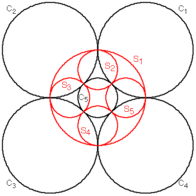

For some special types of limit sets, Apollonian packings among them, Benoit Mandelbrot found a much quicker method, which we illustrate with this example, inversion in the five circles C1, C2, C3, C4, and C5.
(This is similar to another example of inversion in five circles.)
|  |
Now S1 is orthogonal to C1, C2, C3, and C4.
Because these circles are tangent
in pairs at their intersections with S1,
as we have seen, the
limit set
Similarly,
Consequently,
What else can we say about the limit set?
Return to Mandelbrot's method.